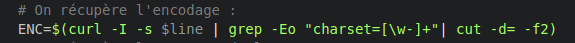
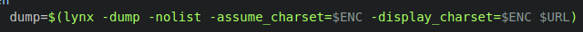
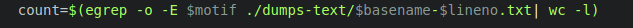
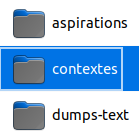
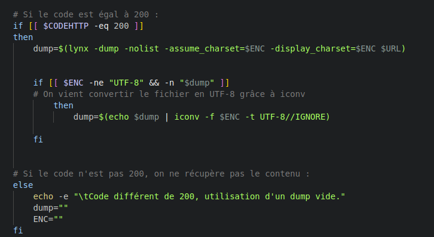
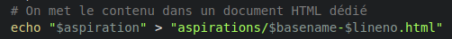
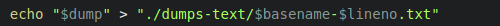
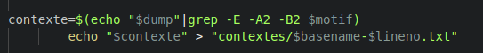
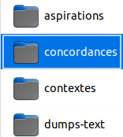

- scriptaspi.sh : le script qui permet de créer les aspirations des pages qui nous intéressaient. Lors de l'éxécution de ce script, un autre script est exécuté en parallèle :
- concordance.sh qui permet de créer les concordances du motif recherché lors de l'éxécution du script.
- itrameurscript.sh qui permet de créer, à partir d'un dossier de fichiers texte, un document XML qui concatène et organise chaque fichier.
Script
L'avancée du script

Comment avons-nous fait ?
Nous avons réalisé 3 scripts différents pour la constitution et l'analyse de nos corpus. C'est scripts ont été réalisés durant les séances de cours et au fil de nos exercices personnels.
Les 3 scripts que nous avons rédigés sont :
Ici, nous allons nous intéresser à la rédaction des deux premiers scripts. La création du script itrameurscript.sh est explicitée dans la partie iTrameur.
Script aspiration
Etape 1
Notre but premier a été de réaliser un script permettant de traiter nos URLs et d'obtenir des données sur celles-ci. Suite à ça nous avons voulu les représenter sous la forme d'un tableau html
Pour ce faire nous avons utilisé des commandes bash vu en cours.
Tout d'abord nous avons téléchargé le script traitement_url_base.sh puis nous avons installé et utilisé curl afin de completer ce script.
La commande curl nous a permis de récuperer l'entête de la reponse du serveur et donc de savoir si l'url etait valide ou non ! si c'est 200 c'est ok sinon non :c

Les entêtes qui nous ont interessées sont les suivantes :
- Le code HTTP
- Son encodage
Lorsque le contenu de la page URL n'est pas de l'UTF-8 nous sommes embetées , en effet le traitement d'une page non UTF-8 peut poser des problemes pour la lecture des accents. Il nous paraît egalement fastidieux de traiter des pages n'ayant pas le même encodage.
Pour eviter les problèmes nous le convertissons avec iconv pour n'avoir que de l'UTF-8.
Nos URLs vérifiées, nous voulons les stocker dans un tableau html afin d'avoir plus de visibilités et un recueil de données.

fermeture du tableau html avec l'intégralité des donnéees
Après avoir traité nos URLs , nous avons pu passer à l'étape suivante: récuperer le contenu textuel de nos pages.
La commande Lynx nous permet de recuperer le contenu textuel d'une page
Etape 4
Le but de notre projet est d'analyser un ou plusieurs mots, de ce fait nous avons commencé à nous soucier de ce mot. Nous avons ajouté un compteur permettant de compter le nombre d'occurence de nos mots dans les dumps
Etape 6
Pour stocker les aspirations, dumps, contexte nous avons crée des dossiers permettant de stocker ces données et également necessaires au fonctionnement du script
Le traitement de l'url ne sera pas le même en fonction de son entête. En effet si il renvoit le code 200 nous allons incrementer son dump à une variable. A contrario si l'URL renvoi un autre code nous utiliseront un dump vide
L' aspiration des pages et dump textuel se font donc sur les URL ayant le code 200, ces données sont directement envoyées aux dossiers crées au préalable
 ajout du contexte
Script Concordance
Création du dossier concordance pour lancer le script et contenir les données
